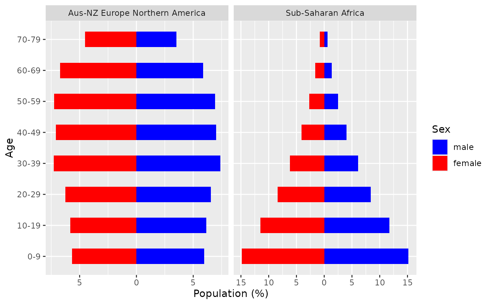

Plotting age distributions
plot_agedist.Rdplot_agedist() plots the age distribution of the WHO global regions.
Usage
plot_agedist(
regions = 1:5,
agedist = agedist_rgn,
rgn_labs = names(agedist_rgn)
)Arguments
- agedist
a list object which contains information for the region-, sex- and age-specific distribution (default is "agedist_rgn" object of CanEpiRisk)
- rgn_labs
a vector of character strings which specifies the labels of the region names shown in the plot.
- region
a single value or a vector which specifies the WHO gloval region(s) (default=1:5; 1="Aus-NZ Europe Northern America", 2="Northern Africa - Western Asia", 3="Latin America and Caribbean", 4="Asia excl. Western Asia", 5="Sub-Saharan Africa")
Examples
# The following examples use default data provided in CanEpiRisk package
# for age distribution for WHO riskmodels (agedist_rgn)
# Example: age distributions for Regions 1 and 5
plot_agedist( regions=c(1,5) )
#> Scale for x is already present.
#> Adding another scale for x, which will replace the existing scale.
